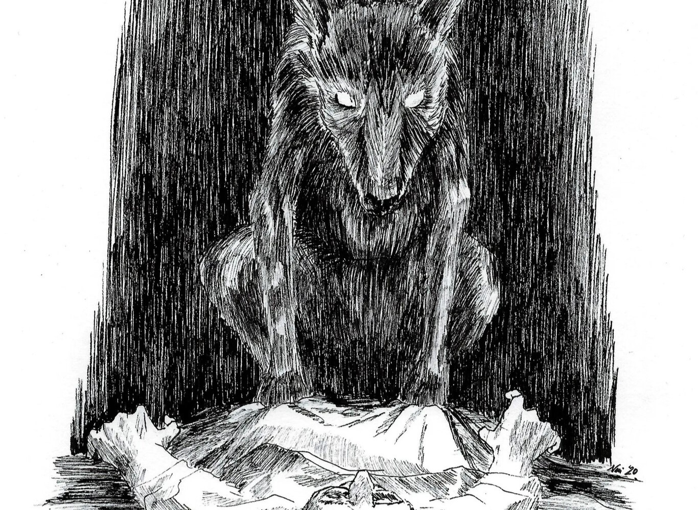
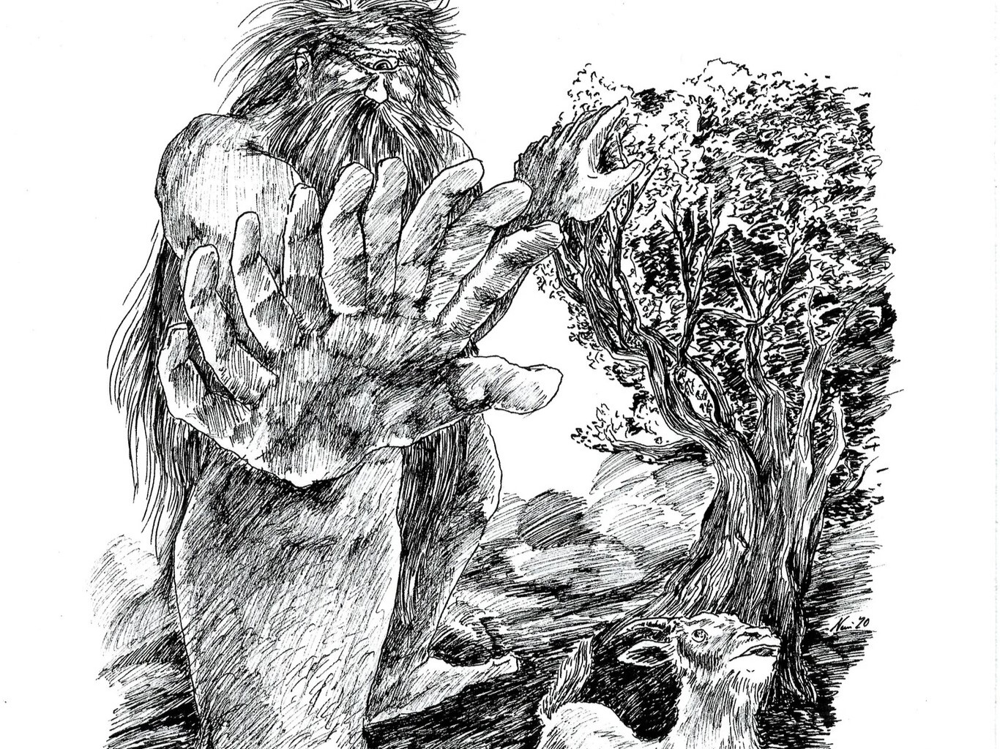
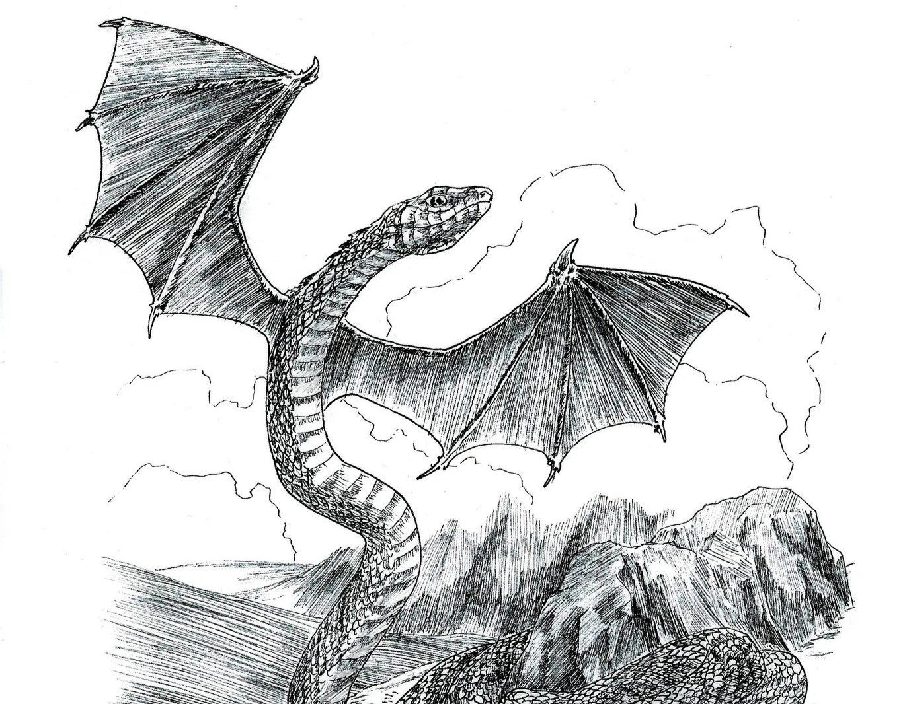
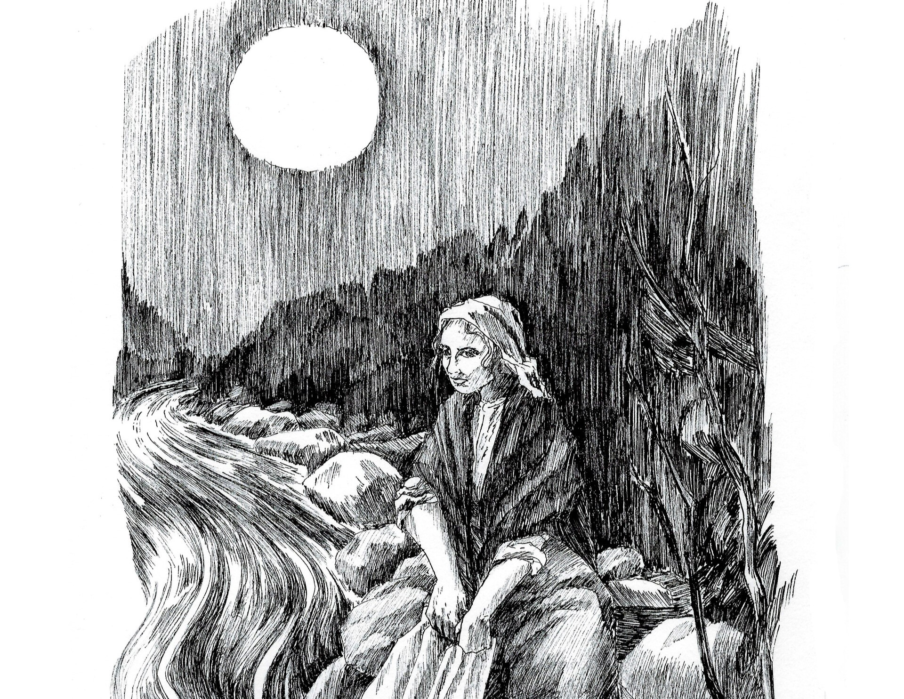
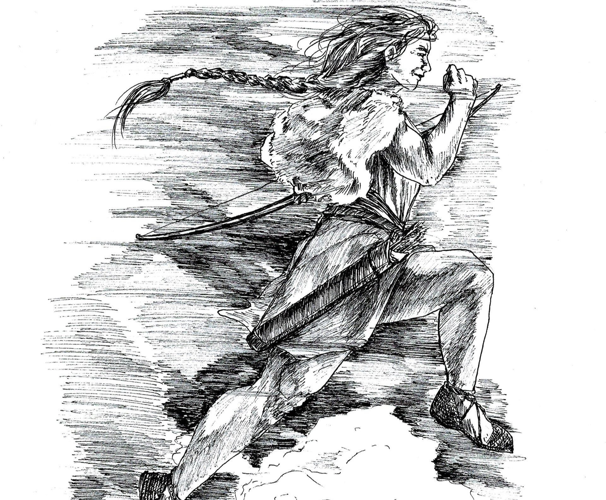
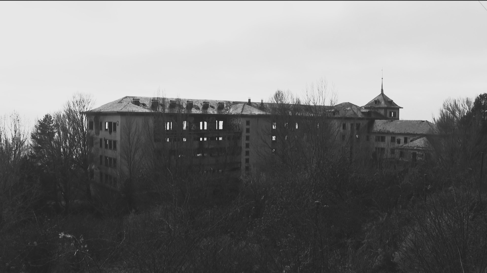

| Seres Mitológicos | Espiritus Atormentados | Lugares Malditos |
|---|---|---|
|

La Pesanta El Ojancano El Drac del Patriarca La Culebre |

La Santa Compaña Lavandeiras da Noite 
Fadas d'os Ibons La Chancalaera |

Sanatorio de Navacerrada 
Preventorio de La Sabinosa 
Aldea de Abuín La isla de Pedrosa |